| 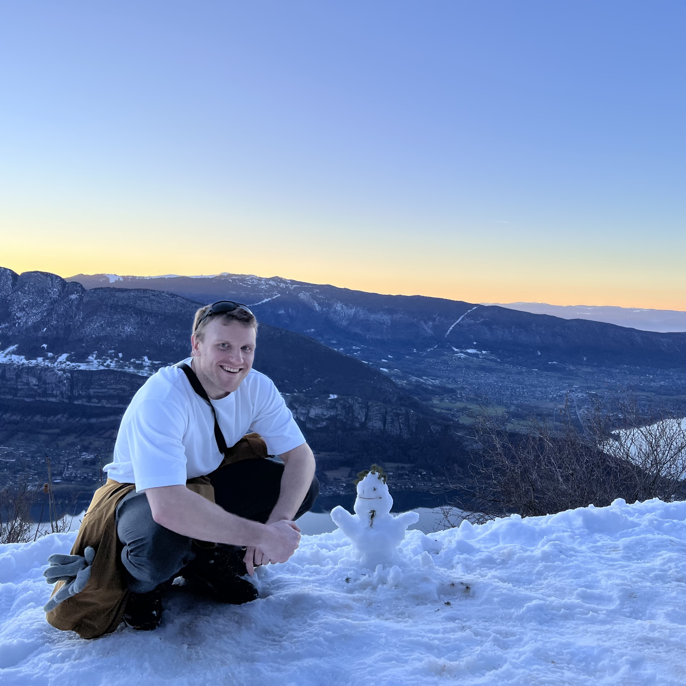 | Kevin Riou |
My interest in embodied AI began in 2018 during my M.Sc. (engineering school), where I proposed and led a project on a fruit-harvesting robot. Working with Prof. Patrick Le Callet, we developed few-shot learning models to detect new fruits from minimal examples. While the computer vision worked well, manually programming a robot to crop each new fruit variety proved a major bottleneck. This challenge led me to focus on imitation learning for my PhD—a promising approach to bypass the need for task-specific programming in robotics.
We therefore defined a PhD project with Prof. Patrick Le Callet and Dr. Kevin Subrin, respectively my main and co-supervisors. The project focused on enabling robots to understand human video demonstrations and subsequently reproducing demonstrated tasks within their own action space, even in new environments. This is what we called "Embodiment and Environment Agnostic Imitation Learning for robots". While we were building my PhD project and searching for fundings, from 2020 to 2021, I worked at Capacités on tactile exploration strategies learnt by reinforcement learning. The ultimate goal was to develop a mine sweeping robot that could explore and recognize objects burried in the ground using tactile sensors. It was a great opportunity to apprehend the challenges associated with embodied AI and real world robotics applications.In october 2021, I started my PhD at Nantes Université in the LS2N lab. I defended this PhD in January 2025 🎥 [Recording Link] 🎥. This project involved 3D Human Pose Estimation, Action Recognition, 0-shot object detection/segmentation with large vision-and-language models, and diverse imitation learning strategies.
Below are teasers of some of the solutions we developed during my PhD:
3D Human Pose Estimation:
| 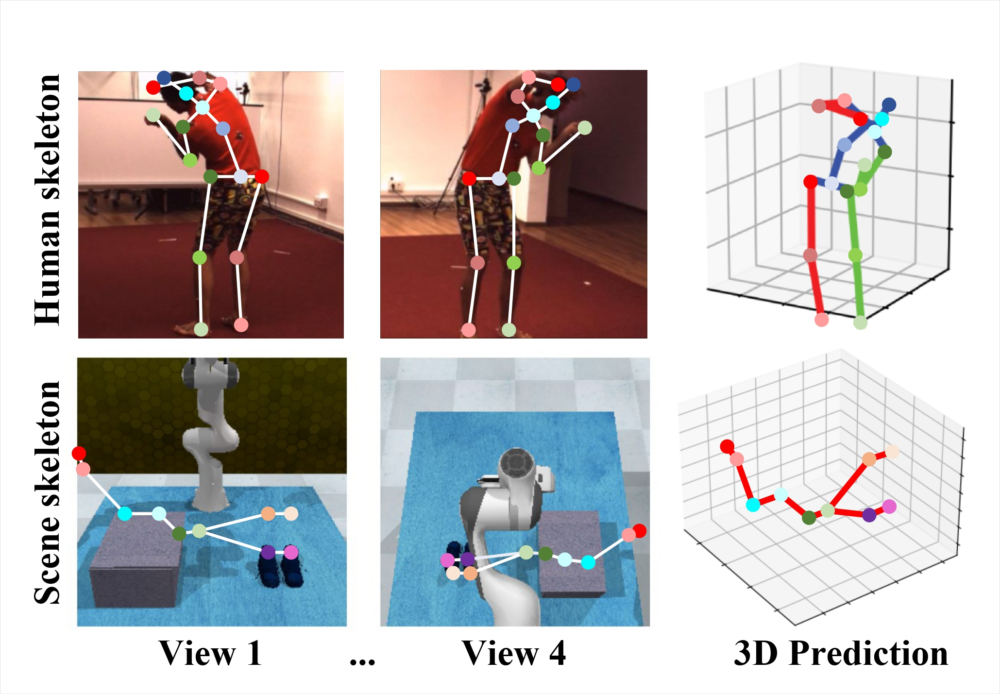 |
Geometric Consistency-Guaranteed Spatio-Temporal Transformer for Unsupervised Multi-View 3D Pose Estimation
@article{dong2024geometric,
title={Geometric Consistency-Guaranteed Spatio-Temporal Transformer for Unsupervised Multi-View 3D Pose Estimation},
author={Dong, Kaiwen and Riou, K{\'e}vin and Zhu, Jingwen and Pastor, Andr{\'e}as and Subrin, K{\'e}vin and Zhou, Yu and Yun, Xiao and Sun, Yanjing and Le Callet, Patrick},
journal={IEEE Transactions on Instrumentation and Measurement},
year={2024},
publisher={IEEE}
}
|
| 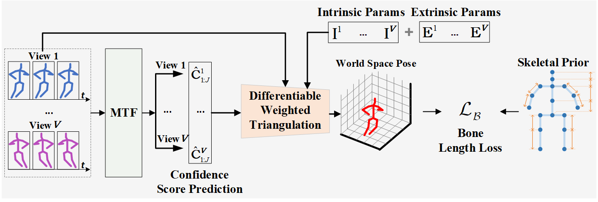 |
Evaluating 3d human pose estimation in occluded multi-sensor scenarios: dataset and annotation approach
@inproceedings{riou2024evaluating,
title={Evaluating 3d human pose estimation in occluded multi-sensor scenarios: dataset and annotation approach},
author={Riou, Kevin and Dong, Kaiwen and Huang, Yujie and Subrin, Kevin and Le Callet, Patrick and Sun, Yanjing},
booktitle={2024 IEEE International Conference on Image Processing (ICIP)},
pages={2683--2689},
year={2024},
organization={IEEE}
}
|
Action recognition:
| 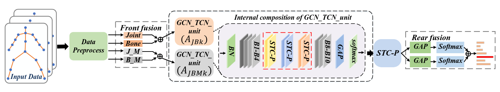 |
Behavioral Recognition of Skeletal Data Based on Targeted Dual Fusion Strategy
@inproceedings{yun2024behavioral,
title={Behavioral Recognition of Skeletal Data Based on Targeted Dual Fusion Strategy},
author={Yun, Xiao and Xu, Chenglong and Riou, Kevin and Dong, Kaiwen and Sun, Yanjing and Li, Song and Subrin, Kevin and Le Callet, Patrick},
booktitle={Proceedings of the AAAI Conference on Artificial Intelligence},
volume={38},
number={7},
pages={6917--6925},
year={2024}
}
|
Imitation Learning:
| 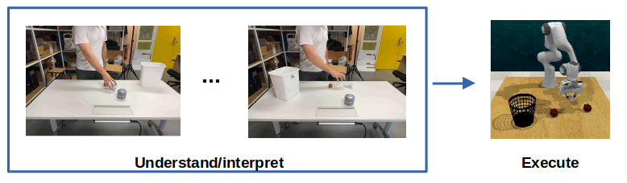 |
Vision Foundation Models for an embodiment and environment agnostic scene representation for robotic manipulation
@inproceedings{riou2024vision,
title={Vision Foundation Models for an embodiment and environment agnostic scene representation for robotic manipulation},
author={Riou, Kevin and Subrin, Kevin and Le Callet, Patrick},
booktitle={International Conference on Intelligent Robots and Systems (IROS), on Brain over Brawn Workshop (BoB)(https://bob-workshop. github. io/)},
year={2024}
}
|
| 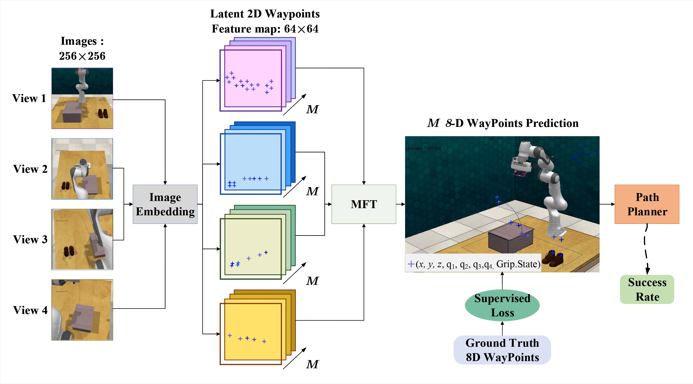 |
From Temporal-evolving to Spatial-fixing: A Keypoints-based Learning Paradigm for Visual Robotic Manipulation
@inproceedings{riou2023temporal,
title={From Temporal-evolving to Spatial-fixing: A Keypoints-based Learning Paradigm for Visual Robotic Manipulation},
author={Riou, Kevin and Dong, Kaiwen and Subrin, K{\'e}vin and Sun, Yanjing and Le Callet, Patrick},
booktitle={2023 IEEE/RSJ International Conference on Intelligent Robots and Systems (IROS)},
pages={1728--1734},
year={2023},
organization={IEEE}
}
|
Reinforcement learning based tactile exploration:
| 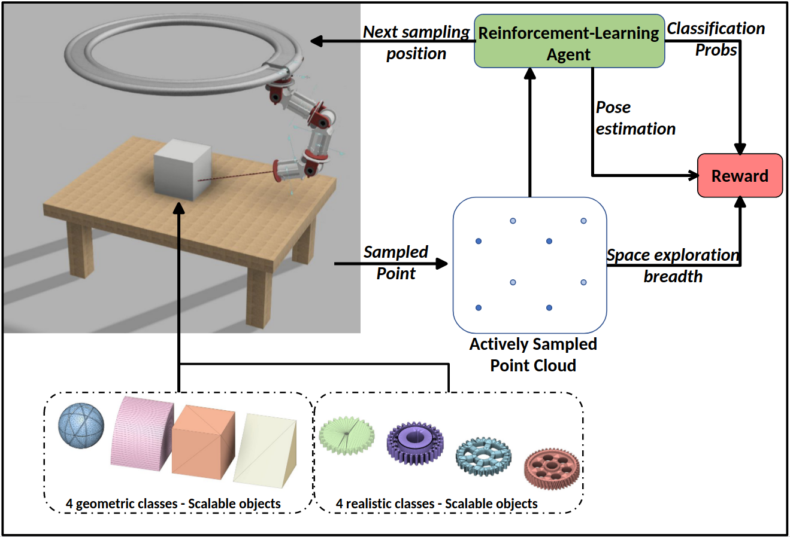 |
Reinforcement Learning Based Tactile Sensing for Active point cloud Acquisition, Recognition and Localization
@article{riou2024reinforcement,
title={Reinforcement Learning Based Tactile Sensing for Active point cloud Acquisition, Recognition and Localization},
author={Riou, Kevin and Dong, Kaiwen and Subrin, Kevin and Le Callet, Patrick},
journal={IEEE Journal of Selected Topics in Signal Processing},
year={2024},
publisher={IEEE}
}
|
| 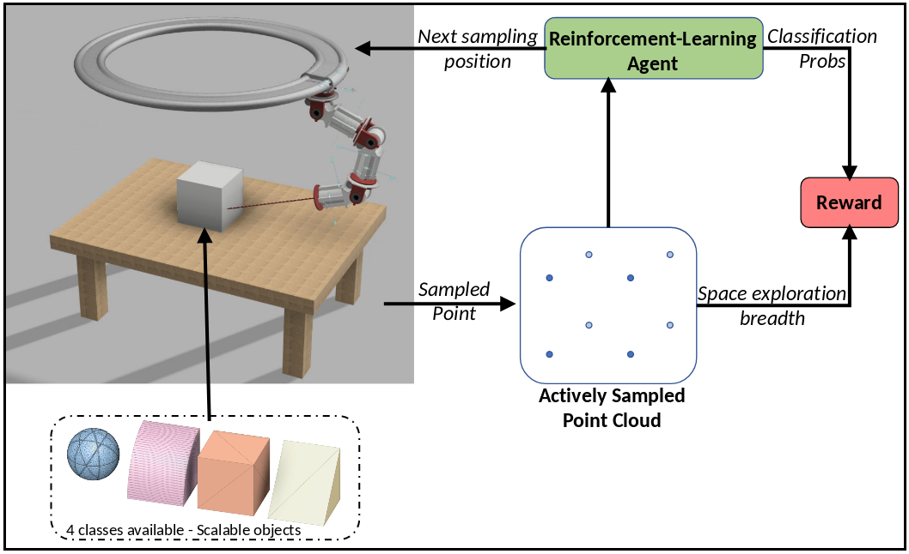 |
Reinforcement Learning Based Point-Cloud Acquisition and Recognition Using Exploration-Classification Reward Combination
@inproceedings{riou2022reinforcement,
title={Reinforcement Learning Based Point-Cloud Acquisition and Recognition Using Exploration-Classification Reward Combination},
author={Riou, Kevin and Subrin, Kevin and Le Callet, Patrick},
booktitle={2022 IEEE International Conference on Multimedia and Expo (ICME)},
pages={1--6},
year={2022},
organization={IEEE}
}
|
| 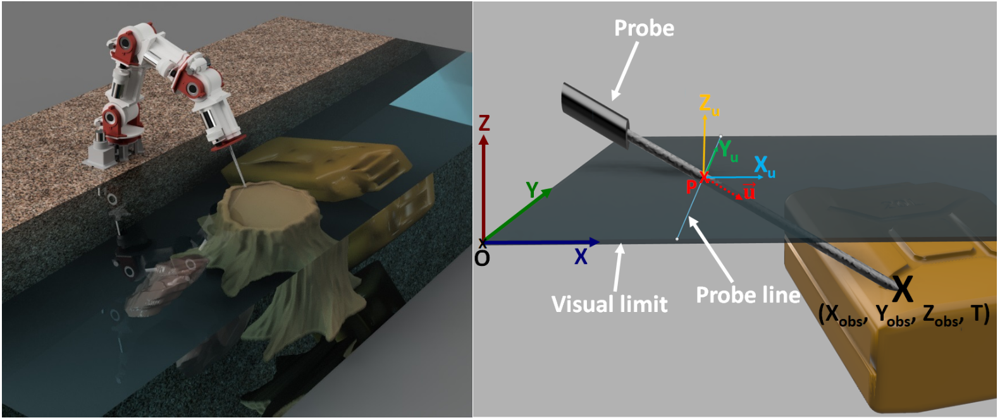 |
Seeing by haptic glance: Reinforcement learning based 3d object recognition
@inproceedings{riou2021seeing,
title={Seeing by haptic glance: Reinforcement learning based 3d object recognition},
author={Riou, Kevin and Ling, Suiyi and Gallot, Guillaume and Le Callet, Patrick},
booktitle={2021 IEEE International Conference on Image Processing (ICIP)},
pages={3637--3641},
year={2021},
organization={IEEE}
}
|
Others:
|
Kinetic particles: from human pose estimation to an immersive and interactive piece of art questionning thought-movement relationships
@inproceedings{lafontaine2023kinetic,
title={Kinetic particles: from human pose estimation to an immersive and interactive piece of art questionning thought-movement relationships.},
author={Lafontaine, Mickael and Cloarec-Michaud, Julie and Riou, Kevin and Huang, Yujie and Dong, Kaiwen and Le Callet, Patrick},
booktitle={Proceedings of the 2023 ACM International Conference on Interactive Media Experiences},
pages={382--385},
year={2023}
}
|
|
| 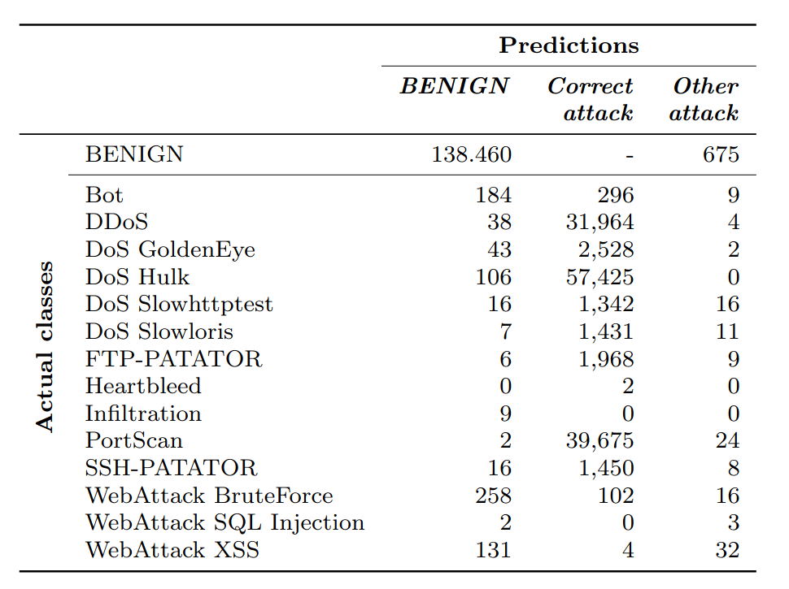 |
Multi-layer perceptron for network intrusion detection: From a study on two recent data sets to deployment on automotive processor
@article{rosay2022multi,
title={Multi-layer perceptron for network intrusion detection: From a study on two recent data sets to deployment on automotive processor},
author={Rosay, Arnaud and Riou, Kevin and Carlier, Florent and Leroux, Pascal},
journal={Annals of Telecommunications},
volume={77},
number={5},
pages={371--394},
year={2022},
publisher={Springer}
}
|
| 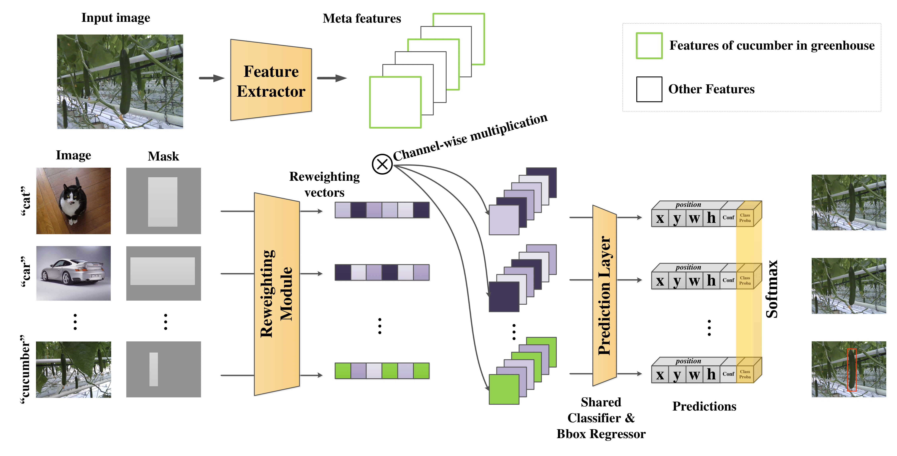 |
Few-shot object detection in real life: case study on auto-harvest
@inproceedings{riou2020few,
title={Few-shot object detection in real life: case study on auto-harvest},
author={Riou, Kevin and Zhu, Jingwen and Ling, Suiyi and Piquet, Mathis and Truffault, Vincent and Le Callet, Patrick},
booktitle={2020 IEEE 22nd International Workshop on Multimedia Signal Processing (MMSP)},
pages={1--6},
year={2020},
organization={IEEE}
}
|